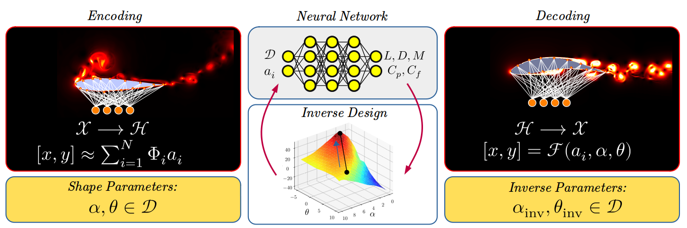
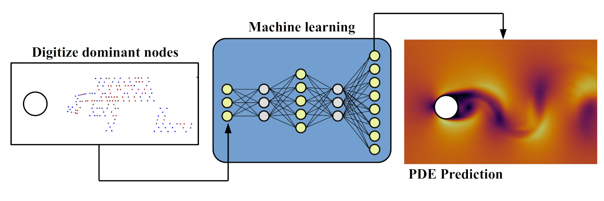
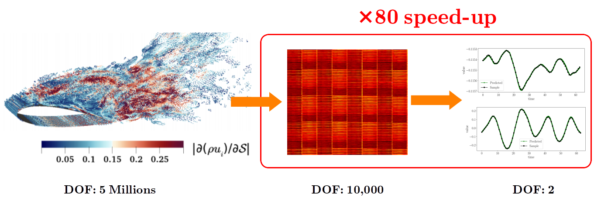
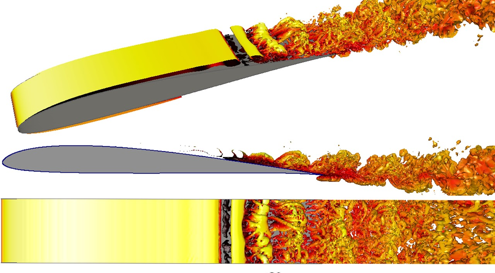

Inverse design is a way we look into a design with specified objectives. For example, shape parameters in the design space define the topology of a solid body. Using a predefined objective function to improve the performance in the operating condition, we can reshape the geometry that satisfies governing equations and results in the expected performance. Although these inverse designs are very useful in industrial applications, these methods are very computationally expensive. My research aims to tie artificial intelligence (AI) to inverse design to reduce computational costs and employ inverse design in a fraction of time. Hence, we can revolutionize the traditional inverse design methods and make them more applicable in the industry.
At the Fields Institute, my mission was to study complex, large-scale dynamical systems and predict the physical behaviour of these non-linear systems in different scenarios. Unlike conventional methods for solving PDEs in a discrete physical domain (computationally expensive), I employ Artificial Intelligence (AI) and Koopman formalism to solve PDEs in Hilbert space. My research helps develop robust and efficient solvers for prediction, failure assessment, design and optimization. In other words, I use AI-powered physics-based modelling for turbulence, thermofluid analysis, load prediction, structural/Aeroelasticity analysis, and many other physical phenomena.
Solving unsteady sensitivity equations is a challenging problem in large-scale constrained PDE optimization. With the advent of high-fidelity simulations and powerful computational resources, topology optimization struggles from the instability of Navier-Stokes equations. The idea we are working on is to transfer the optimization framework from a physical 3D space to an unphysical space and solve optimization with lower computational costs with notable improvement in the stability of constrained PDEs. One example is drag minimization for NACA 0012 airfoil at AOA=25 degrees, where the airfoil experiences a massive flow separation. Animation (a) shows the initial case (NACA 0012 airfoil), and animation (b) presents the optimized shape. It is found that the optimization progress is successfully demonstrated with about 20% drag reduction.
(a) Initial shape.
(b) Optimized shape.
Sensitivity analysis becomes challenging for unsteady aerodynamic problems like the airfoil at high angles of attack exposed to massive flow separation. The reason is that Navier-Stokes equations are strongly non-linear PDEs, and sensitivity equations (either tangent or adjoint) diverge as the sensitivity solution advances in time. I could develop a framework compatible with any unsteady PDEs in a new approach. Using Machine Learning (ML), it is possible to train a surrogate model that is physically interpretative. This framework allows us to compute the sensitivity of the solution with respect to any design variable. This novel approach is applied to find the sensitivity of the drag coefficient with respect to the angle of attack at AOA=25 degrees and Re=20,000. Animation bellow shows the massive flow separation and the sensitivity solution w.r.t the angle of attack at post-stall region.
Flow seperation and its sensitivity w.r.t angle of attack.
The control strategy is a crucial matter in fluid dynamic problems. In the computational domain, the instability of flow may notably influence the instability of the numerical solver. This issue has prohibited developing control systems for strongly nonlinear systems for decades. One of my research studies is on stabilizing solutions for developing control models. As a case study, flow past a circular cylinder at Re=100 is considered. (a) The left-hand side figure shows dynamic responses of the reference model (red) in six sequential sub-spaces. The inlet flow is perturbed to figure out the influence of the Reynolds number on the flow field, hence the system's dynamic response. The uncontrolled (pink) system crashed without any tiny perturbation. On the other hand, the controlled system (blue) can track the dynamic response of the perturbed model, which indicates the controllability of the problem. (b) On the right-hand side, momentums in x and y directions are visualized, which indicates the remarked facts.
(a) Dynamic response of system in phase-space.
(b) Sensitivity of flow w.r.t Reynolds number.
The challenging issues in the development of surrogate models are: 1) they are not very accurate and stable since most of them are built based on linear approximation, while most physical phenomena are non-linear; 2) they usually suffer from computational costs in the off-line and on-line phases, where repetitive data compression and matrix multiplications are employed. However, in my work, I utilize projection-based methods, such as Petrov-Galerkin model reduction, to develop a non-linear surrogate model. Also, I apply a novel hyper-reduction approach in order to reduce time-consuming computations.
In ongoing research, I developed parallel numerical algorithms for the machine with multiprocessor architectures. I implemented a fully parallelized framework for shape optimization of SD7003 in a fully turbulent flow. The optimization framework distributes optimization tasks among the CPUs. Then each CPU sends CFD simulations to GPU clusters to speed-up numerical calculations. This novel framework is able to reduce the optimization cost by about %35 (and, in some cases, up to %70).
